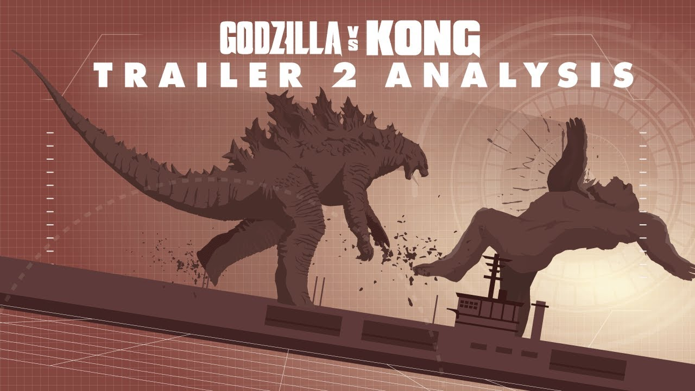
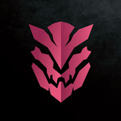
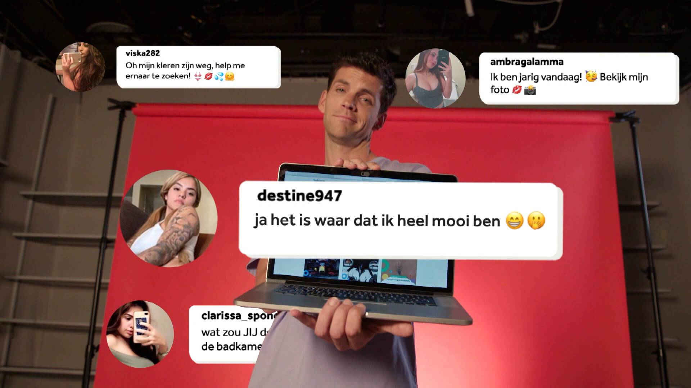

NEW! GODZILLA VS KONG 2021 || Trailer Footage IN-DEPTH Analysis! Pt 2 (Godzilla stronger than Kong?)
Mark Rober Gives Up on Science While Eating Spicy Wings | Hot Ones

Wie zit er achter die irritante seks-comments op Instagram? | UITGEZOCHT #15